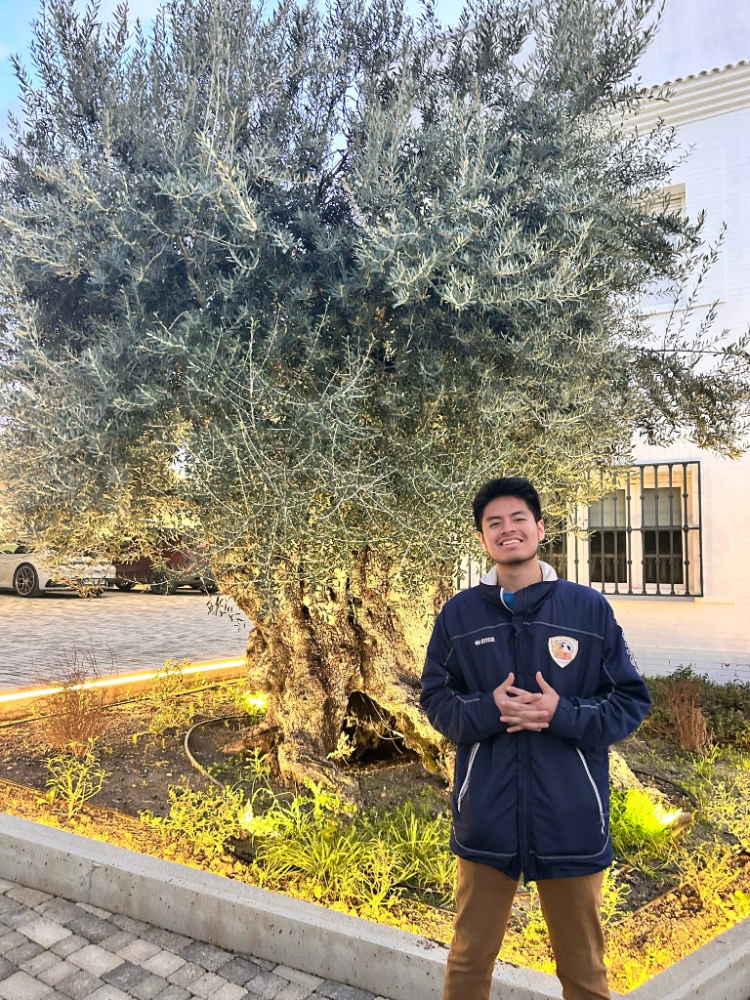

من الأندلس إلى العالم الجديد
El legado culinario árabe en la cocina hispana global
Explorar ↓Durante casi ocho siglos, la civilización árabe-islámica floreció en la Península Ibérica bajo el nombre de Al-Ándalus. Este encuentro de culturas dejó huellas profundas en el idioma, la arquitectura, las matemáticas… y la cocina. Mucho de lo que hoy consideramos «comida española» o «latinoamericana» tiene raíces que viajan hasta Arabia, Persia y el norte de África.
Con la llegada de los moros a la Península Ibérica en 711, comenzó una era de intercambio cultural sin precedentes. Los árabes introdujeron sistemas de irrigación avanzados, las acequias, que transformaron la agricultura ibérica y permitieron cultivar especies antes desconocidas en Europa.
La cocina andalusí incorporó ingredientes de toda la red comercial islámica: especias de India, arroz de Persia, cítricos del Mediterráneo oriental, azúcar de caña del sur asiático. Toledo, Córdoba y Sevilla se convirtieron en centros de innovación gastronómica donde convivían tradiciones árabes, judías, bereberes e ibéricas.
Con la expulsión de los moros en 1492 y el inicio de la colonización española del Nuevo Mundo, estos ingredientes y técnicas culinarias cruzaron el océano. Los colonizadores españoles (muchos de ellos andaluces) llevaron consigo semillas, técnicas y recetas que transformarían para siempre las gastronomías de México, Perú y el Caribe.
Visualización del recorrido geográfico de los alimentos desde el mundo árabe hasta las Américas, un viaje de más de mil años y tres continentes. Haz clic en los marcadores para conocer la historia culinaria de cada ciudad.
Muchas palabras del español culinario conservan su raíz árabe: aceite (al-zayt), azúcar (al-sukkar), arroz (ar-ruzz), naranja (nāranǧ), berenjena (al-bāḏinjān), almendra (al-lauz), azafrán (za'farān), comino (kammūn).
Ocho ingredientes que recorrieron el mundo árabe, transformaron la cocina ibérica y cruzaron el Atlántico para volverse inseparables de la gastronomía hispana. Haz clic en cada tarjeta para conocer su historia.
الزيت · al-zayt
↻ clic para leerLos árabes trajeron a Al-Ándalus técnicas avanzadas de cultivo del olivo y sistemas de riego que expandieron enormemente la producción. La palabra «aceite» y «aceituna» provienen directamente del árabe al-zayt y al-zaytūna.
Andalucía se convirtió en el mayor productor de aceite de oliva del mundo medieval. Este legado viajó a las Américas con los conquistadores, y hoy México, Argentina y Chile producen aceite de oliva de alta calidad.
🌍 Origen: Mediterráneo oriental → Al-Ándalus → Américas
الزعفران · az-za'farān
↻ clic para leerCultivado por los árabes en La Mancha y Castilla, el azafrán español (considerado el mejor del mundo) es un legado directo de Al-Ándalus. Su nombre, «azafrán», viene del árabe az-za'farān.
Los médicos andalusíes como Averroes lo usaban como remedio y colorante. En la cocina, tiñó de dorado el arroz valenciano y hoy persiste en la paella. En las Américas enriqueció el arroz con pollo caribeño y sopas de la cocina peruana.
🌍 Origen: Asia Central → Al-Ándalus (La Mancha) → Américas
اللوز · al-lauz
↻ clic para leer«Almendra» viene del árabe al-lauz. Los árabes introdujeron el almendro en toda la Península Ibérica y convirtieron la almendra en protagonista de su repostería. El mazapán de Toledo (marçapāne) es una herencia directa de la confitería árabe.
El turrón, los polvorones y los mazapanes que hoy identificamos con la Navidad española tienen raíces árabes. En México, las almendras entraron en el mole y en los dulces coloniales; en Perú, en los alfajores.
🌍 Origen: Asia Central → Al-Ándalus → México, Perú, Caribe
الرز · ar-ruzz
↻ clic para leer«Arroz» viene del árabe ar-ruzz, del persa berenj. Los árabes introdujeron el cultivo del arroz en la Península Ibérica con sistemas de irrigación sofisticados en Valencia y Murcia, base de lo que siglos después sería la paella.
Con la colonización, el arroz cruzó el Atlántico y se convirtió en alimento fundamental de toda América Latina. Hoy es difícil imaginar la cocina cubana, puertorriqueña, peruana o mexicana sin arroz, un ingrediente que llegó con los árabes.
🌍 Origen: India/Persia → Al-Ándalus (Valencia) → toda América Latina
السكر · as-sukkar
↻ clic para leer«Azúcar» viene del árabe as-sukkar, del sánscrito śarkarā. Los árabes trajeron la caña de azúcar desde Persia e India a Al-Ándalus, estableciendo los primeros ingenios de la Península en Málaga, Granada y las Canarias.
Al llegar al Caribe, los españoles reprodujeron este modelo de cultivo a escala industrial, lo que desencadenó la trata de esclavos africanos. El azúcar árabe-ibérico transformó radicalmente las Américas, tanto en sus aspectos dulces como en sus tragedias.
🌍 Origen: India/Persia → Al-Ándalus → Caribe → transformación global
الباذنجان · al-bāḏinjān
↻ clic para leer«Berenjena» viene del árabe al-bāḏinjān, del persa bādingān. Era completamente desconocida en Europa antes de la llegada de los árabes. Los recetarios andalusíes medievales contienen docenas de recetas con berenjena.
La alboronía, guiso árabe-andaluz de berenjenas con especias, es uno de los platos más antiguos documentados de la Península. La berenjena viajó a las Américas y hoy es común en la cocina latinoamericana, especialmente en Cuba y Venezuela.
🌍 Origen: India/Persia → Al-Ándalus → Américas
النارنج · an-nāranǧ
↻ clic para leer«Naranja» viene del árabe nāranǧ, del persa nārang. Los árabes introdujeron la naranja amarga, el limón y la lima en la Península Ibérica. Los jardines de la Alhambra en Granada estaban llenos de naranjos, símbolo de refinamiento árabe.
Los cítricos son hoy inseparables de la cocina latinoamericana: el limón en el ceviche peruano, en el aguachile mexicano, en la limonada colombiana. Esta omnipresencia del limón en las Américas es, en última instancia, un legado árabe.
🌍 Origen: Asia Oriental → Al-Ándalus (Granada) → toda América Latina
الكمون · al-kammūn
↻ clic para leer«Comino» viene del árabe al-kammūn. Era una de las especias más utilizadas en la cocina árabe-andalusí, presente en carnes, guisos y panes. Los recetarios medievales andalusíes lo mencionan en casi cada página.
Hoy el comino es quizás el ingrediente que mejor ilustra la conexión árabe-latinoamericana: es esencial en el chile mexicano, los tamales guatemaltecos, las carnes colombianas y los guisos caribeños. Su camino: Arabia → Al-Ándalus → México.
🌍 Origen: Mediterráneo oriental → Al-Ándalus → México, América Central, Caribe
Observaciones de primera mano de un viaje reciente a Andalucía (Granada, la Alhambra y Úbeda), integradas con el análisis académico de este proyecto.
Granada fue el día de sorpresa del programa, y se convirtió en mi favorito de todo el viaje. Llegamos sin saber exactamente a dónde íbamos, y cuando vi la Alhambra por primera vez entendí por qué guarda tantas capas: no es solo arquitectura nazarí, es un testigo de siglos de convivencia.
Visitamos Granada durante el Ramadán, y eso cambió completamente la experiencia. La ciudad tenía un ritmo distinto, más íntimo. Conocí a Jazmín, a su mamá y a su familia, parte de la comunidad marroquí en España. Entramos a una mezquita, recé y hablé con musulmanes en español; fue mi primera vez en ese contexto, y fue de lo más natural del mundo. Isaac pudo probar comida marroquí con ellos. Yo no comí en ese momento porque seguía siendo de día en Ramadán y yo también ayunaba, pero ese detalle, ayunar junto a ellos aunque sea por unas horas, me hizo sentir en comunidad de una forma inesperada.
Conectar la historia árabe que estudiamos en clase con algo tan vivo y presente como el Ramadán, la mezquita y la cocina marroquí en Granada fue de lo más intenso que me llevo del viaje.
El viernes por la tarde visitamos el Mercado de Maravillas en Madrid, y me encantó. Me recordó enseguida a los mercados de Lima: los puestos de Perú, Ecuador y Colombia, los productos latinoamericanos, los olores y el ritmo de los pasillos. En varios rincones casi no notaba la diferencia con casa; fue muy bonito y familiar.
Ahí hice una de las entrevistas más bonitas del viaje: hablé con una señora de Lima que vino a Madrid con su esposo, mientras sus hijos siguen en Perú. Ella cocina con sazón de casa detrás del mostrador y habla del Perú con cariño. Hablamos de migración, de adaptarse a una ciudad nueva, de cómo el mercado se convierte en despensa y sala de estar al mismo tiempo. Mis compañeros Aiden, Isaac, Brady y José se unieron para comer; una compañera de clase probó comida peruana por primera vez, y yo le mostré platos que me recuerdan casa.
El Mercado de Maravillas, igual que los zocos de Al-Ándalus que estudiamos, es un lugar donde distintos orígenes comparten un mismo pasillo. El legado árabe de la cocina española llegó también ahí, a través de ingredientes y técnicas que cruzan siglos y fronteras.
Úbeda fue el centro del programa. El primer día, mi compañero de cuarto y yo salimos a caminar y vimos a unos niños jugando al fútbol en la calle. Nos unimos: equipos Cristiano Ronaldo contra Messi, y ellos jugaban mucho mejor que nosotros. Ese fue mi rincón de Úbeda, no el monumento, sino el barrio que se abrió antes que cualquier visita guiada.
Después vinieron las catas y talleres: el taller de cocina en La Cocinita de Anita, donde preparé ensaladilla rusa (me gusta cocinar desde pequeño, y fue buenísimo hacerlo con buena guía); el centro del aceite, donde entendí por primera vez la diferencia entre virgen extra, coupage y monovarietales; Quesos y Besos; y Aoveland en Baeza, donde la almazara de noche tiene algo de ceremonial. También corrí una media maratón de 21 km entre olivares. Jaén tiene decenas de millones de olivos en todas las cuestas.
Úbeda declara sin pudor su pasado árabe en la arquitectura, en los olivos, en el aceite. La misma ciudad que hoy se visita como joya renacentista tiene sus raíces más profundas en Al-Ándalus.
Este viaje me transformó como consumidor. Ahora miro las etiquetas del aceite de oliva, me fijo en el origen, en el tipo. Entiendo que hay capas detrás de lo que parece cotidiano: quién produjo, quién transportó, cuánto gana la cooperativa de Jaén.
Lo que más me marcó fue ver en vivo lo que en clase estudiamos en textos: el legado árabe no es historia archivada. Está en la acequia que riega un olivar, en la naranja amarga del patio de la mezquita de Granada, en el comino del puesto peruano del Mercado de Maravillas. Las capas de judíos, musulmanes y cristianos que dejaron su huella en Andalucía son las mismas capas que cruzaron el Atlántico y que hoy dan sabor a la cocina que me recuerda casa. Reconocer eso cambia cómo como, y cómo miro el mapa.

«Aquí cocino como en mi casa; si falta algo, lo busco en otro puesto y lo arreglo. El mercado es mi despensa y mi sala de estar.»
Cocinera de Lima, puesto de comida peruana. Mercado de Maravillas, Tetuán, Madrid. Entrevista informal durante la visita del programa, marzo 2026.
Referencias académicas, libros, artículos y recursos primarios consultados en la elaboración de este proyecto.
Asignatura: SPAN 3535: Mercado de Maravillas
Profesora: Lori Catanzaro
Semestre: Primavera 2026